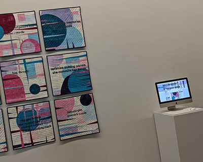
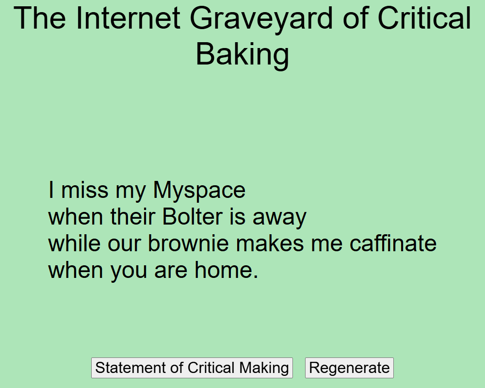

1. Read a grammar
A Tracery grammar is written in JSON: a list of named rules. Each name is a symbol; each symbol has a list of options. Wrap a symbol in #hashes# to have Tracery pick one of its options there.
{
"origin": ["#maker.capitalize# #made# #thing.a# out of #material#."],
"maker": ["a quilter", "a student", "the bot"],
"made": ["stitched", "folded", "remixed"],
"thing": ["map", "archive", "zine"],
"material": ["old t-shirts", "index cards", "dead links"]
}originis where every run starts.- Modifiers fix the grammar of the sentence:
.capitalize,.a(a or an),.s(plural),.ed(past tense). - JSON is strict. Each option is in
"double quotes", options are separated by commas, and the last item in a list or object has no comma after it.
2. The playground
Edit the grammar and the output changes as you type. This runs the real Tracery library, stored locally, so it works without Wi-Fi.
3. Grow at least three rules
Make the grammar yours: words from your own research, craft, or memory. For variety, give origin more than one sentence shape, and let rules call other rules:
"origin": ["#line#", "#line# #line#", "#question#"],
"line": ["#maker.capitalize# #made# #thing.a#.", "Nobody asked for #thing.a#, so #maker# made one."],
"question": ["Who taught #maker# to make #thing.a#?"]Press Regenerate twenty times. Which outputs surprise you? Which repeat too often? A word that appears in many lists, or a list with only two options, shows up a lot.
4. Remember a choice
An action in square brackets picks once and saves the result, so a name can recur in the same sentence. Load quilt blocks in the playground to see it:
"origin": ["[maker:#name#]#block#"],
"block": ["#maker# could not finish the #pattern#, so #maker# gave it away."]Without [maker:#name#], each #maker# would pick a different name.
5. Put it somewhere
- A page of your own: download generator.html, paste your grammar in, and you have a generator that runs from one file.
- A template: Leonardo Flores's Generative Grammar Template.
- A bot: Blue Bots, Done Quick! posts your grammar to Bluesky. All you need is an account for the bot.
- Go deeper: Kate Compton's Tracery tutorial goes well past what we need today.
6. Flatten it for print
To get Act IV ready, make a second, flat version of your grammar: an origin made only of symbols, and lists of plain words, with no nested #rules# inside them. A printed ring can't expand a rule, so every word on one ring has to work next to every word on the others.
{
"origin": ["#who# #when# #does# #how#"],
"who": ["the agent", "a quilter", "my bot", "the archive", "a student", "the machine", "our zine", "the cursor"],
"when": ["always", "never", "slowly", "quietly", "sometimes", "rarely", "gladly", "still"],
"does": ["unravels", "remembers", "stitches", "forgets", "loops", "glitches", "listens", "wanders"],
"how": ["by hand", "offline", "in public", "at night", "for us", "in loops", "on paper", "elsewhere"]
}Same number of words in every list: each becomes one face of a ring. Load cryptex (flat) above, regenerate, and read a few aloud. Cut any word that breaks a sentence. Save your flat grammar as grammar.json.
Unmake
Textile arts have long argued about what automation means for expressive work. Tracery has gone back and forth between screens and cloth: in Re:Traced Threads (ELO 2019), a Tracery bot proposed quilted text, and its output was stitched into nine physical blocks.
- When the machine generates and a person stitches, whose work is it? Who goes on the label?
- Tracery grammars are plain JSON. When Twitter shut off its API, the bots moved to Mastodon and then to Bluesky, because the format was open and people rebuilt the hosts. What in your grammar would survive the next platform closing?
- Which words in your grammar could only have come from you?


Reference files
- generator.html
A complete one-file generator. Paste in a grammar; keep the file.
- starter.json
The starter grammar from the playground.
- quilt-blocks.json
Actions, nested rules, and several sentence shapes.
- cryptex-grammar.json
A flat, four-slot grammar for the Act IV cryptex.
- spinner-grammar.json
A flat, two-slot grammar for the flower spinner.